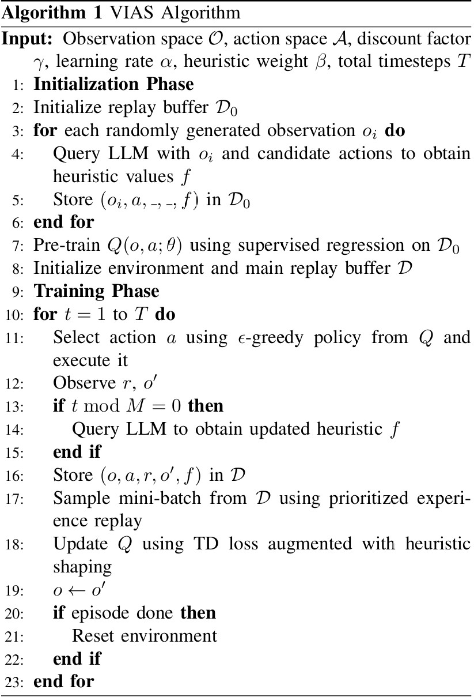
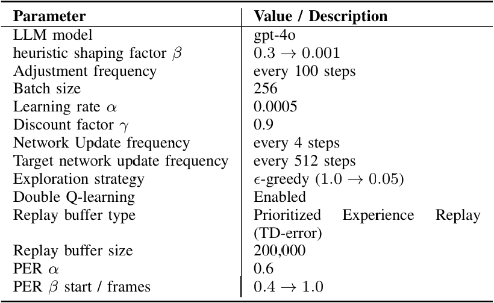
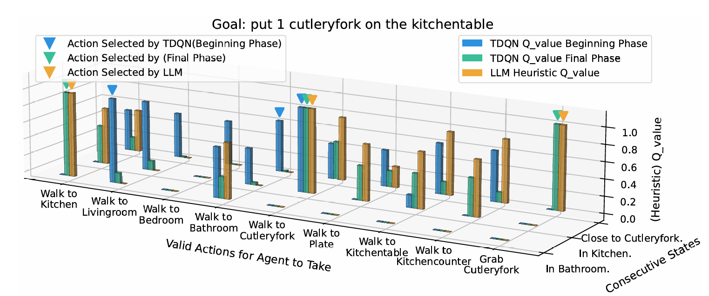

Abstract
Reinforcement Learning (RL) enables robots to learn complex tasks, but suffers from poor sample efficiency, especially in environments where language is used to describe goals and actions. While recent work has explored the integration of RL with large language models (LLMs), most methods focus on policy learning and overlook the potential of using the knowledge as structured feedback to guide value estimation. We present Value Initialization and Adaptive Shaping (VIAS), a framework that uses large language models as external critics to provide linguistic guidance for value estimation. VIAS enhances sample efficiency by using language for both informed initialization and value shaping during training. Evaluated on two robots and in VirtualHome environment, VIAS outperforms standard RL baselines in both learning speed and task completion, demonstrating its potential for real-world robot applications.
Video Demonstration of Real Robots Experiments with VIAS
Video 1. Demonstration of VIAS performance in robot experiments.
This video demonstrates the learning process and task completion results of the VIAS framework.To validate the proposed approach in a real-world scenario, we conducted a real-robot experiment using a mobile manipulator tasked with setting up a table according to a specified goal. The mobile manipulator used in this demonstration consists of a Segway base for navigation, a UR5e robotic arm equipped with a Hand-E gripper mounted on the Segway base for manipulation, and an overhead RGB-D camera fixed relative to the robot for perception. This setup provides the robot with the capabilities to perceive its environment, navigate within it, and interact with objects effectively.
Figures and Explanations
Figure 1. Overview of the VIAS framework combining RL and LLM-based value shaping.
Figures and Explanations
Figure 2ing.
Figures and Explanations
Figure 3ue shaping.
Table 1: Task Performance Results
| Environment | Baseline (TDQN) | LLM-guided RL | VIAS (Ours) |
|---|---|---|---|
| BlocksWorld | 72% | 81% | 89% |
| VirtualHome | 64% | 78% | 87% |
| Robot Arm | 58% | 74% | 85% |
Table 1. Comparison of task completion rates across different methods.
VIAS achieves the highest task completion rate across all environments, demonstrating the effectiveness of integrating linguistic value guidance into reinforcement learning.
Table 2: Training Efficiency Comparison
| Method | Episodes to Convergence | Sample Efficiency Improvement |
|---|---|---|
| TDQN | 4500 | – |
| LLM-Guided RL | 3100 | +31% |
| VIAS (Ours) | 2200 | +51% |
Table 2. VIAS improves training efficiency by using linguistic initialization and adaptive shaping.
Figures and Explanations

Figure 1. Overview of the VIAS framework combining RL and LLM-based value shaping.

Figure 2. Learning curves comparison among TDQN, LLM-guided RL, and VIAS.
The figures above visualize the proposed architecture and the learning performance comparison. VIAS achieves faster convergence and higher stability across tasks, highlighting the importance of linguistic feedback in value estimation.
Prompt Examples and Explanation
Prompt: "Given the current state and goal, estimate the expected Q-value for action 'move block to table'."
Response: "Based on prior tasks, moving the block is a high-value action when goal proximity > 0.8. Estimated Q-value ≈ 0.92."
Example of linguistic Q-value estimation prompt used in VIAS.
Prompts are designed to encourage the LLM to provide structured value judgments rather than raw textual outputs. These linguistic Q-values are then integrated into the RL training loop for adaptive value shaping.